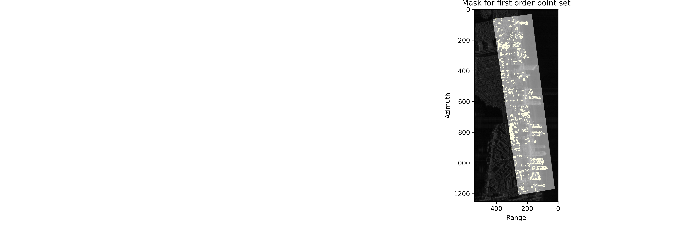
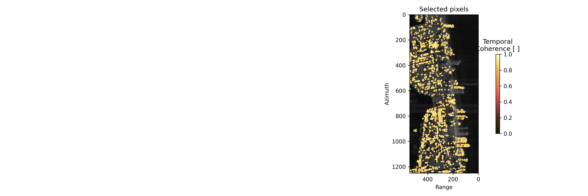

north_sunnyisles
outputs_sunnynorthnarrow2023/pic
step_0_amplitude_image.png
step_0_interferogram_network.png
step_0_temporal_phase_coherence.png
step_1_arc_coherence.png
step_1_arc_coherence_reduced.png
step_1_mask_p1.png

step_1_rmse_dem_correction_0th_iter.png
step_1_rmse_vel_0th_iter.png

step_2_estimation_dem_correction.png
step_2_estimation_velocity.png
selected_pixels_temp_coh_0.8.png

config.json
{
general: {
input_path: "inputs/",
output_path: "outputs_sunnynorth/",
output_path: "outputs_sunnynorthnarrow2023/",
num_cores: 10,
num_patches: 1,
apply_temporal_unwrapping: true,
spatial_unwrapping_method: "puma",
logging_level: "INFO",
logfile_path: "logfiles/",
},
phase_linking: {
use_phase_linking_results: false,
inverted_path: "inverted/",
num_siblings: 20,
mask_phase_linking_file: "",
use_ps: false,
mask_ps_file: "maskPS.h5",
},
preparation: {
start_date: null,
end_date: "2023-10-31",
ifg_network_type: "sb",
num_ifgs: 3,
max_tbase: 400,
filter_window_size: 9,
},
consistency_check: {
coherence_p1: 0.8,
grid_size: 0,
mask_p1_file: "",
mask_p1_file: "maskfiles/narrow_maskPoly.h5",
num_nearest_neighbours: 50,
max_arc_length: null,
velocity_bound: 0.1,
dem_error_bound: 250.0,
num_optimization_samples: 100,
arc_unwrapping_coherence: 0.6,
min_num_arc: 3,
},
unwrapping: {
use_arcs_from_temporal_unwrapping: true,
},
filtering: {
coherence_p2: 0.8,
apply_aps_filtering: true,
interpolation_method: "kriging",
grid_size: 1000,
mask_p2_file: "",
use_moving_points: true,
max_temporal_autocorrelation: 0.3,
},
densification: {
num_connections_to_p1: 5,
max_distance_to_p1: 2000,
velocity_bound: 0.15,
dem_error_bound: 100.0,
num_optimization_samples: 100,
arc_unwrapping_coherence: 0.5,
},
}
../../subset_sarvey.log
2025-05-20 10:52:16 sarvey_subset.bash inputs/slcStack.h5 --lat 25.937 25.958 --lon -80.124 -80.118 --output ../north_sunnyisles
sarvey_2025-06-19-23-28-20.log
2025-06-19 23:28:20,815 - INFO - SARvey version: 1.2.0 - Strawberry Pie, 2025-02-19_01, Run: MTInSAR
2025-06-19 23:28:20,816 - INFO - Parameter value default
2025-06-19 23:28:20,816 - INFO - _________ _____ _______
2025-06-19 23:28:20,816 - INFO - input_path inputs/ inputs/
2025-06-19 23:28:20,816 - INFO - output_path /Users/famelung/Library/CloudStorage/OneDrive-UniversityofMiami/scratch/MiamiTsxSMDT36/north_sunnyisles/outputs_sunnynorthnarrow2023 <--- outputs/
2025-06-19 23:28:20,816 - INFO - num_cores 10 <--- 50
2025-06-19 23:28:20,816 - INFO - num_patches 1 1
2025-06-19 23:28:20,816 - INFO - apply_temporal_unwrapping True True
2025-06-19 23:28:20,816 - INFO - spatial_unwrapping_method puma puma
2025-06-19 23:28:20,816 - INFO - logging_level INFO INFO
2025-06-19 23:28:20,816 - INFO - logfile_path logfiles/ logfiles/
2025-06-19 23:28:20,816 - INFO -
2025-06-19 23:28:20,816 - INFO - ---------------------------------------------------------------------------------
2025-06-19 23:28:20,816 - INFO - STEP 0: PREPARATION
2025-06-19 23:28:20,816 - INFO - ---------------------------------------------------------------------------------
2025-06-19 23:28:20,816 - INFO - Parameter value default
2025-06-19 23:28:20,816 - INFO - _________ _____ _______
2025-06-19 23:28:20,816 - INFO - start_date None None
2025-06-19 23:28:20,816 - INFO - end_date 2023-10-31 <--- None
2025-06-19 23:28:20,816 - INFO - ifg_network_type sb sb
2025-06-19 23:28:20,816 - INFO - num_ifgs 3 3
2025-06-19 23:28:20,816 - INFO - max_tbase 400 <--- 100
2025-06-19 23:28:20,816 - INFO - filter_window_size 9 9
2025-06-19 23:28:20,816 - INFO -
2025-06-19 23:28:20,816 - INFO - ########## PREPARE PROCESSING: LOAD INPUT ##########
2025-06-19 23:28:20,821 - INFO - Orbit direction: descending
2025-06-19 23:28:20,821 - DEBUG - Date Selected
2025-06-19 23:28:20,821 - DEBUG - __________ ________
2025-06-19 23:28:20,821 - DEBUG - 2017-10-15 x
2025-06-19 23:28:20,821 - DEBUG - 2017-10-26 x
2025-06-19 23:28:20,821 - DEBUG - 2017-11-06 x
2025-06-19 23:28:20,821 - DEBUG - 2017-11-17 x
2025-06-19 23:28:20,821 - DEBUG - 2017-11-28 x
2025-06-19 23:28:20,821 - DEBUG - 2017-12-09 x
2025-06-19 23:28:20,821 - DEBUG - 2017-12-20 x
2025-06-19 23:28:20,821 - DEBUG - 2017-12-31 x
2025-06-19 23:28:20,821 - DEBUG - 2018-01-11 x
2025-06-19 23:28:20,821 - DEBUG - 2018-01-22 x
2025-06-19 23:28:20,821 - DEBUG - 2018-02-02 x
2025-06-19 23:28:20,821 - DEBUG - 2018-02-24 x
2025-06-19 23:28:20,821 - DEBUG - 2018-03-07 x
2025-06-19 23:28:20,821 - DEBUG - 2018-03-18 x
2025-06-19 23:28:20,821 - DEBUG - 2018-03-29 x
2025-06-19 23:28:20,821 - DEBUG - 2018-04-09 x
2025-06-19 23:28:20,821 - DEBUG - 2018-04-20 x
2025-06-19 23:28:20,821 - DEBUG - 2018-05-12 x
2025-06-19 23:28:20,821 - DEBUG - 2018-06-03 x
2025-06-19 23:28:20,821 - DEBUG - 2018-06-14 x
2025-06-19 23:28:20,821 - DEBUG - 2018-07-06 x
2025-06-19 23:28:20,821 - DEBUG - 2018-07-28 x
2025-06-19 23:28:20,821 - DEBUG - 2018-08-08 x
2025-06-19 23:28:20,821 - DEBUG - 2018-08-19 x
2025-06-19 23:28:20,821 - DEBUG - 2018-08-30 x
2025-06-19 23:28:20,821 - DEBUG - 2018-09-10 x
2025-06-19 23:28:20,821 - DEBUG - 2018-09-21 x
2025-06-19 23:28:20,821 - DEBUG - 2018-10-02 x
2025-06-19 23:28:20,821 - DEBUG - 2018-10-13 x
2025-06-19 23:28:20,821 - DEBUG - 2018-10-24 x
2025-06-19 23:28:20,821 - DEBUG - 2018-11-04 x
2025-06-19 23:28:20,821 - DEBUG - 2018-11-15 x
2025-06-19 23:28:20,821 - DEBUG - 2018-11-26 x
2025-06-19 23:28:20,821 - DEBUG - 2018-12-07 x
2025-06-19 23:28:20,821 - DEBUG - 2018-12-18 x
2025-06-19 23:28:20,821 - DEBUG - 2018-12-29 x
2025-06-19 23:28:20,821 - DEBUG - 2019-01-09 x
2025-06-19 23:28:20,821 - DEBUG - 2019-01-20 x
2025-06-19 23:28:20,821 - DEBUG - 2019-01-31 x
2025-06-19 23:28:20,821 - DEBUG - 2019-02-11 x
2025-06-19 23:28:20,821 - DEBUG - 2019-02-22 x
2025-06-19 23:28:20,821 - DEBUG - 2019-03-05 x
2025-06-19 23:28:20,821 - DEBUG - 2019-03-16 x
2025-06-19 23:28:20,821 - DEBUG - 2019-03-27 x
2025-06-19 23:28:20,821 - DEBUG - 2019-04-07 x
2025-06-19 23:28:20,822 - DEBUG - 2019-04-18 x
2025-06-19 23:28:20,822 - DEBUG - 2019-05-10 x
2025-06-19 23:28:20,822 - DEBUG - 2019-05-21 x
2025-06-19 23:28:20,822 - DEBUG - 2019-06-01 x
2025-06-19 23:28:20,822 - DEBUG - 2019-06-12 x
2025-06-19 23:28:20,822 - DEBUG - 2019-06-23 x
2025-06-19 23:28:20,822 - DEBUG - 2019-07-04 x
2025-06-19 23:28:20,822 - DEBUG - 2019-07-26 x
2025-06-19 23:28:20,822 - DEBUG - 2019-08-06 x
2025-06-19 23:28:20,822 - DEBUG - 2019-08-17 x
2025-06-19 23:28:20,822 - DEBUG - 2019-08-28 x
2025-06-19 23:28:20,822 - DEBUG - 2019-09-08 x
2025-06-19 23:28:20,822 - DEBUG - 2019-09-19 x
2025-06-19 23:28:20,822 - DEBUG - 2019-10-22 x
2025-06-19 23:28:20,822 - DEBUG - 2019-11-13 x
2025-06-19 23:28:20,822 - DEBUG - 2019-11-24 x
2025-06-19 23:28:20,822 - DEBUG - 2019-12-16 x
2025-06-19 23:28:20,822 - DEBUG - 2019-12-27 x
2025-06-19 23:28:20,822 - DEBUG - 2020-01-07 x
2025-06-19 23:28:20,822 - DEBUG - 2020-01-18 x
2025-06-19 23:28:20,822 - DEBUG - 2020-01-29 x
2025-06-19 23:28:20,822 - DEBUG - 2020-02-09 x
2025-06-19 23:28:20,822 - DEBUG - 2020-02-20 x
2025-06-19 23:28:20,822 - DEBUG - 2020-03-02 x
2025-06-19 23:28:20,822 - DEBUG - 2020-03-13 x
2025-06-19 23:28:20,822 - DEBUG - 2020-03-24 x
2025-06-19 23:28:20,822 - DEBUG - 2020-04-04 x
2025-06-19 23:28:20,822 - DEBUG - 2020-04-15 x
2025-06-19 23:28:20,822 - DEBUG - 2020-04-26 x
2025-06-19 23:28:20,822 - DEBUG - 2020-05-07 x
2025-06-19 23:28:20,822 - DEBUG - 2020-05-18 x
2025-06-19 23:28:20,822 - DEBUG - 2020-05-29 x
2025-06-19 23:28:20,822 - DEBUG - 2020-06-09 x
2025-06-19 23:28:20,822 - DEBUG - 2020-06-20 x
2025-06-19 23:28:20,822 - DEBUG - 2020-07-12 x
2025-06-19 23:28:20,822 - DEBUG - 2020-09-27 x
2025-06-19 23:28:20,822 - DEBUG - 2020-10-19 x
2025-06-19 23:28:20,822 - DEBUG - 2020-11-10 x
2025-06-19 23:28:20,822 - DEBUG - 2020-11-21 x
2025-06-19 23:28:20,822 - DEBUG - 2020-12-02 x
2025-06-19 23:28:20,822 - DEBUG - 2020-12-24 x
2025-06-19 23:28:20,822 - DEBUG - 2021-01-04 x
2025-06-19 23:28:20,822 - DEBUG - 2021-02-06 x
2025-06-19 23:28:20,822 - DEBUG - 2021-02-28 x
2025-06-19 23:28:20,822 - DEBUG - 2021-03-11 x
2025-06-19 23:28:20,822 - DEBUG - 2021-04-02 x
2025-06-19 23:28:20,822 - DEBUG - 2021-04-13 x
2025-06-19 23:28:20,822 - DEBUG - 2021-04-24 x
2025-06-19 23:28:20,822 - DEBUG - 2021-05-05 x
2025-06-19 23:28:20,822 - DEBUG - 2021-05-16 x
2025-06-19 23:28:20,822 - DEBUG - 2021-05-27 x
2025-06-19 23:28:20,822 - DEBUG - 2021-06-07 x
2025-06-19 23:28:20,822 - DEBUG - 2021-06-18 x
2025-06-19 23:28:20,822 - DEBUG - 2021-08-23 x
2025-06-19 23:28:20,822 - DEBUG - 2021-09-03 x
2025-06-19 23:28:20,822 - DEBUG - 2021-10-06 x
2025-06-19 23:28:20,822 - DEBUG - 2022-09-01 x
2025-06-19 23:28:20,822 - DEBUG - 2022-09-12 x
2025-06-19 23:28:20,822 - DEBUG - 2022-09-23 x
2025-06-19 23:28:20,822 - DEBUG - 2022-10-15 x
2025-06-19 23:28:20,822 - DEBUG - 2022-10-26 x
2025-06-19 23:28:20,822 - DEBUG - 2022-11-06 x
2025-06-19 23:28:20,822 - DEBUG - 2022-11-17 x
2025-06-19 23:28:20,822 - DEBUG - 2022-11-28 x
2025-06-19 23:28:20,822 - DEBUG - 2022-12-09 x
2025-06-19 23:28:20,822 - DEBUG - 2022-12-20 x
2025-06-19 23:28:20,822 - DEBUG - 2022-12-31 x
2025-06-19 23:28:20,822 - DEBUG - 2023-01-11 x
2025-06-19 23:28:20,822 - DEBUG - 2023-01-22 x
2025-06-19 23:28:20,822 - DEBUG - 2023-02-02 x
2025-06-19 23:28:20,822 - DEBUG - 2023-02-13 x
2025-06-19 23:28:20,822 - DEBUG - 2023-02-24 x
2025-06-19 23:28:20,822 - DEBUG - 2023-03-07 x
2025-06-19 23:28:20,822 - DEBUG - 2023-03-18 x
2025-06-19 23:28:20,822 - DEBUG - 2023-03-29 x
2025-06-19 23:28:20,822 - DEBUG - 2023-04-20 x
2025-06-19 23:28:20,822 - DEBUG - 2023-05-01 x
2025-06-19 23:28:20,822 - DEBUG - 2023-05-12 x
2025-06-19 23:28:20,822 - DEBUG - 2023-05-23 x
2025-06-19 23:28:20,822 - DEBUG - 2023-06-03 x
2025-06-19 23:28:20,822 - DEBUG - 2023-06-14 x
2025-06-19 23:28:20,822 - DEBUG - 2023-06-25 x
2025-06-19 23:28:20,822 - DEBUG - 2023-07-06 x
2025-06-19 23:28:20,822 - DEBUG - 2023-07-17 x
2025-06-19 23:28:20,822 - DEBUG - 2023-07-28 x
2025-06-19 23:28:20,822 - DEBUG - 2023-08-08 x
2025-06-19 23:28:20,822 - DEBUG - 2023-08-19 x
2025-06-19 23:28:20,822 - DEBUG - 2023-08-30 x
2025-06-19 23:28:20,822 - DEBUG - 2023-09-10 x
2025-06-19 23:28:20,822 - DEBUG - 2023-09-21 x
2025-06-19 23:28:20,822 - DEBUG - 2023-10-02 x
2025-06-19 23:28:20,822 - DEBUG - 2023-10-13 x
2025-06-19 23:28:20,822 - DEBUG - 2023-10-24 x
2025-06-19 23:28:20,822 - INFO - Start date: 2017-10-15
2025-06-19 23:28:20,822 - INFO - Stop date: 2023-10-24
2025-06-19 23:28:20,822 - INFO - Number of SLC: 138
2025-06-19 23:28:20,822 - INFO - ########## DESIGN IFG NETWORK ##########
2025-06-19 23:28:20,824 - INFO - Small baseline network
2025-06-19 23:28:20,824 - INFO - write IfgNetwork to /Users/famelung/Library/CloudStorage/OneDrive-UniversityofMiami/scratch/MiamiTsxSMDT36/north_sunnyisles/outputs_sunnynorthnarrow2023/ifg_network.h5
2025-06-19 23:28:20,825 - INFO - temporal baselines: [ 11 22 33 44 55 66 77 88 99 110 121 132 143 154 165 176 187 198
209 220 231 242 253 264 275 286 297 308 319 330 341 352 363 374 385 396
407 418 429 440 451 462 473 484 495 506 517 539 550]
2025-06-19 23:28:21,333 - INFO - ########## GENERATE STACK OF 407 INTERFEROGRAMS & ESTIMATE TEMPORAL COHERENCE ##########
2025-06-19 23:28:21,334 - INFO - Prepare dataset: ifgs of in size of (1251, 543, 407)
2025-06-19 23:28:21,336 - INFO - Prepare dataset: temp_coh of in size of (1251, 543)
2025-06-19 23:28:52,204 - INFO - Patches processed: 1/1
2025-06-19 23:28:52,204 - DEBUG -
time used: 00 mins 30.9 secs.
2025-06-19 23:28:52,226 - INFO - Transform coordinates from latitude and longitude (WGS84) to North and East (UTM).
2025-06-19 23:28:52,297 - INFO - write data to /Users/famelung/Library/CloudStorage/OneDrive-UniversityofMiami/scratch/MiamiTsxSMDT36/north_sunnyisles/outputs_sunnynorthnarrow2023/coordinates_utm.h5...
2025-06-19 23:28:52,299 - INFO - write data to /Users/famelung/Library/CloudStorage/OneDrive-UniversityofMiami/scratch/MiamiTsxSMDT36/north_sunnyisles/outputs_sunnynorthnarrow2023/background_map.h5...
2025-06-19 23:28:52,505 - INFO - reading box None from file: /Users/famelung/Library/CloudStorage/OneDrive-UniversityofMiami/scratch/MiamiTsxSMDT36/north_sunnyisles/outputs_sunnynorthnarrow2023/temporal_coherence.h5 ...
2025-06-19 23:28:52,702 - INFO - ---------------------------------------------------------------------------------
2025-06-19 23:28:52,702 - INFO - STEP 1: CONSISTENCY CHECK
2025-06-19 23:28:52,702 - INFO - ---------------------------------------------------------------------------------
2025-06-19 23:28:52,702 - INFO - Parameter value default
2025-06-19 23:28:52,702 - INFO - _________ _____ _______
2025-06-19 23:28:52,702 - INFO - coherence_p1 0.8 <--- 0.9
2025-06-19 23:28:52,702 - INFO - grid_size None <--- 200
2025-06-19 23:28:52,702 - INFO - mask_p1_file /Users/famelung/Library/CloudStorage/OneDrive-UniversityofMiami/scratch/MiamiTsxSMDT36/north_sunnyisles/maskfiles/narrow_maskPoly.h5 <---
2025-06-19 23:28:52,702 - INFO - num_nearest_neighbours 50 <--- 30
2025-06-19 23:28:52,702 - INFO - max_arc_length 999999 <--- None
2025-06-19 23:28:52,702 - INFO - velocity_bound 0.1 0.1
2025-06-19 23:28:52,702 - INFO - dem_error_bound 250.0 <--- 100.0
2025-06-19 23:28:52,702 - INFO - num_optimization_samples 100 100
2025-06-19 23:28:52,702 - INFO - arc_unwrapping_coherence 0.6 0.6
2025-06-19 23:28:52,702 - INFO - min_num_arc 3 3
2025-06-19 23:28:52,702 - INFO -
2025-06-19 23:28:52,703 - INFO - reading box None from file: /Users/famelung/Library/CloudStorage/OneDrive-UniversityofMiami/scratch/MiamiTsxSMDT36/north_sunnyisles/outputs_sunnynorthnarrow2023/temporal_coherence.h5 ...
2025-06-19 23:28:52,985 - INFO - load mask for area of interest from: /Users/famelung/Library/CloudStorage/OneDrive-UniversityofMiami/scratch/MiamiTsxSMDT36/north_sunnyisles/maskfiles/narrow_maskPoly.h5.
2025-06-19 23:28:53,373 - INFO - reading box None from file: /Users/famelung/Library/CloudStorage/OneDrive-UniversityofMiami/scratch/MiamiTsxSMDT36/north_sunnyisles/outputs_sunnynorthnarrow2023/ifg_stack.h5 ...
2025-06-19 23:28:53,887 - INFO - write data to /Users/famelung/Library/CloudStorage/OneDrive-UniversityofMiami/scratch/MiamiTsxSMDT36/north_sunnyisles/outputs_sunnynorthnarrow2023/p1_ifg_wr.h5...
2025-06-19 23:28:53,890 - INFO - create distance matrix between all points...
2025-06-19 23:28:54,298 - INFO - Triangulate points with 50-nearest neighbours.
2025-06-19 23:28:54,460 - DEBUG - time used: 00 mins 0.2 secs.
2025-06-19 23:28:54,460 - INFO - Triangulate points with global delaunay.
2025-06-19 23:28:54,506 - INFO - remove arcs with length > 999999.
2025-06-19 23:28:54,557 - INFO - retrieve arcs from adjacency matrix.
2025-06-19 23:28:54,661 - INFO - no. arcs: 137649
2025-06-19 23:28:57,552 - INFO - ifg arc observations created.
2025-06-19 23:28:57,552 - INFO - write data to /Users/famelung/Library/CloudStorage/OneDrive-UniversityofMiami/scratch/MiamiTsxSMDT36/north_sunnyisles/outputs_sunnynorthnarrow2023/point_network.h5...
2025-06-19 23:28:57,658 - INFO - ########## TEMPORAL UNWRAPPING: AMBIGUITY FUNCTION ##########
2025-06-19 23:28:57,658 - INFO - start parallel processing with 10 cores.
2025-06-19 23:30:02,541 - INFO - Finished temporal unwrapping.
2025-06-19 23:30:02,542 - DEBUG - time used: 01 mins 4.9 secs.
2025-06-19 23:30:02,552 - INFO - write data to /Users/famelung/Library/CloudStorage/OneDrive-UniversityofMiami/scratch/MiamiTsxSMDT36/north_sunnyisles/outputs_sunnynorthnarrow2023/point_network_parameter.h5...
2025-06-19 23:30:14,581 - INFO - Detect points with low quality arcs (mean): < 0.6
2025-06-19 23:30:14,581 - INFO - Removal of points whose arcs are incoherent in average.
2025-06-19 23:30:18,889 - INFO - Detected 618 point(s) with mean coherence of all connected arcs < 0.6
2025-06-19 23:30:18,889 - INFO - Removal of low quality arcs: < 0.6
2025-06-19 23:30:18,890 - INFO - Removed 27633 arc(s)
2025-06-19 23:30:18,976 - INFO - Removal of arcs and PSC that cannot be tested.
2025-06-19 23:30:23,045 - INFO - Detected 34 point(s) with less than 3 arcs
2025-06-19 23:30:23,045 - INFO - Remove 618 point(s)
2025-06-19 23:30:25,915 - INFO - Removed 10213 arc(s) connected to the removed point(s)
2025-06-19 23:30:30,566 - INFO - ########## NOISY POINT REMOVAL BASED ON ARC PARAMETERS ##########
2025-06-19 23:30:30,566 - INFO - Selection of the reference PSC
2025-06-19 23:30:31,491 - INFO - Spatial integration to detect noisy point
2025-06-19 23:30:31,491 - INFO - ITERATION: 0
2025-06-19 23:31:12,964 - INFO - Maximum RMSE DEM correction: 14.03 m
2025-06-19 23:31:12,964 - INFO - Maximum RMSE velocity: 0.0015 m / year
2025-06-19 23:31:13,499 - INFO - No noisy pixels detected.
2025-06-19 23:31:13,499 - DEBUG - time used: 00 mins 42.0 secs.
2025-06-19 23:31:13,499 - INFO - write data to /Users/famelung/Library/CloudStorage/OneDrive-UniversityofMiami/scratch/MiamiTsxSMDT36/north_sunnyisles/outputs_sunnynorthnarrow2023/point_network_parameter.h5...
2025-06-19 23:31:13,643 - INFO - write data to /Users/famelung/Library/CloudStorage/OneDrive-UniversityofMiami/scratch/MiamiTsxSMDT36/north_sunnyisles/outputs_sunnynorthnarrow2023/p1_ifg_wr.h5...
2025-06-19 23:31:13,717 - INFO - ---------------------------------------------------------------------------------
2025-06-19 23:31:13,717 - INFO - STEP 2: UNWRAPPING
2025-06-19 23:31:13,717 - INFO - ---------------------------------------------------------------------------------
2025-06-19 23:31:13,718 - INFO - Parameter value default
2025-06-19 23:31:13,718 - INFO - _________ _____ _______
2025-06-19 23:31:13,718 - INFO - use_arcs_from_temporal_unwrapping True True
2025-06-19 23:31:13,718 - INFO -
2025-06-19 23:31:13,800 - INFO - read from /Users/famelung/Library/CloudStorage/OneDrive-UniversityofMiami/scratch/MiamiTsxSMDT36/north_sunnyisles/outputs_sunnynorthnarrow2023/p1_ifg_wr.h5
2025-06-19 23:31:13,832 - INFO - Integrate parameters from arcs to points.
2025-06-19 23:31:13,832 - INFO - Integrate DEM correction.
2025-06-19 23:31:16,774 - DEBUG - time used: 00 mins 0.1 secs.
2025-06-19 23:31:17,004 - INFO - Integrate mean velocity.
2025-06-19 23:31:19,901 - DEBUG - time used: 00 mins 0.1 secs.
2025-06-19 23:31:20,134 - INFO - Remove phase contributions from mean velocity and DEM correction from wrapped phase of points.
2025-06-19 23:31:20,219 - INFO - ########## SPATIAL UNWRAPPING: puma ##########
2025-06-19 23:31:20,219 - INFO - start parallel processing with 10 cores.
2025-06-19 23:31:25,865 - DEBUG - time used: 00 mins 5.6 secs.
2025-06-19 23:31:25,868 - INFO - Add phase contributions from mean velocity and DEM correction back to spatially unwrapped residual phase.
2025-06-19 23:31:25,986 - INFO - write data to /Users/famelung/Library/CloudStorage/OneDrive-UniversityofMiami/scratch/MiamiTsxSMDT36/north_sunnyisles/outputs_sunnynorthnarrow2023/p1_ifg_unw.h5...
2025-06-19 23:31:25,988 - INFO - ########## INVERT IFG NETWORK ##########
2025-06-19 23:31:37,187 - DEBUG - time used: 00 mins 11.2 secs.
2025-06-19 23:31:37,187 - INFO - read from /Users/famelung/Library/CloudStorage/OneDrive-UniversityofMiami/scratch/MiamiTsxSMDT36/north_sunnyisles/outputs_sunnynorthnarrow2023/p1_ifg_unw.h5
2025-06-19 23:31:37,224 - INFO - write data to /Users/famelung/Library/CloudStorage/OneDrive-UniversityofMiami/scratch/MiamiTsxSMDT36/north_sunnyisles/outputs_sunnynorthnarrow2023/p1_ts.h5...
2025-06-19 23:31:37,232 - INFO - SARvey MTI finished normally.